GPE OpenAI explorer: verification
Pivot of Project GPE into a public reading site for openai/math. Implementation plan 20261101_openai_explorer, executed Nov 1, 2026. All checks below ran locally against http://localhost:3120 (dev PGlite, OPERATOR_TOKEN set). Nothing is deployed.
What was built
A public site meant for project-gpe.vercel.app (Vercel project project-gpe, Supabase Postgres) where a reader lands on a painted hero, browses all 373 result families with abstracts and PDF links (built from the openai/math index with zero model calls), opens a family, and for the five digested papers (eth, logspace, intmult, unit-distance, noncoordinate) lands on a new overview page ("what this paper proves", main theorem, novel steps, proof shape) before entering the unchanged explorer. Ingest, runs, review, corpus and cost moved under /admin behind the existing operator login, along with the read APIs those pages use.
Status: Sprints 1–4 complete locally. Sprint 0 local guards (0.1–0.5) done. Sprint 0 infra (0.6–0.8: Supabase migrate, Vercel env, preview deploy) and Sprint 5 beyond the local export/import scripts (prod migrate and catalog sync, firewall rule, deploy, prod smoke) are not done, pending Kyle's confirmation and the Supabase pooler URIs. Lint, typecheck and tests green at 274 tests.
Sprint 0: infra preview + prod guards partial
Landed (0.1–0.5, local code):
server/db/index.ts:prepare: falseon the postgres driver; dev refuses a non-localhostDATABASE_URLunlessALLOW_REMOTE_DEV_DB=1; on Vercel with noDATABASE_URLit throws instead of creating PGlite.server/plugins/runner.ts: nosweep()/drain()against Postgres, so a dev server can't fail prod runs.server/utils/appUrl.ts: in prod, a localhost app URL falls back toVERCEL_PROJECT_PRODUCTION_URL, else logs an error once.server/plugins/operator.ts: boot env report naming each missing prod variable (names only)..env.example: "never setDATABASE_URLin .env" note andALLOW_REMOTE_DEV_DB.
Verification: lint, typecheck and tests green with the Sprint 1 tree. Not run: preview /api/health (needs 0.6–0.8), and the remote-URL refusal / no-sweep check (needs the Supabase strings).
Deviation: appUrl.ts decides "in prod" with NODE_ENV === 'production' rather than import.meta.dev, so scripts and tests that load it outside Nuxt behave like dev.
Sprint 1: catalog data, APIs, public list, agent surface complete
Landed: tables families, manuscripts, catalog_meta and papers.manuscript_dir (migration 0004) plus RLS on every table (0005); server/catalog/ parse, sync and query; npm run catalog:sync pinned to a commit sha; /api/v1/families, /api/v1/families/:code, /api/v1/disciplines; /api/papers now returns public digests only (the full list moved to /api/admin/papers); agent rows and /llms.txt rewritten for the new positioning; same-site page fetches skip the agent request log via x-gpe-site.
Verification
catalog:sync: 373 families, 721 manuscripts, 17 disciplines, 138 Lean families atopenai/math@4eaee87. Second run writes 0/0. EveryFLAGSHIPnumber resolves./api/v1/families?digested=1total 5;?discipline=combinatorics37;/api/v1/families/49=/049with 2 manuscripts, one digested;/api/v1/disciplinesstats 373 / 721 / 17 / 5.- A plain
curlto/api/v1/familiesadds anagent_requestsrow; the same request withsec-fetch-site: same-origindoesn't. /api/papershas only public digests and norunkey; the admin library still shows runs from/api/admin/papers./llms.txthas the new intro and catalog endpoints;/api/v1/papersrows carryfamily.
Sync report (catalog_sync_report.txt, second run catalog_sync_second_run.json):
openai/math @ 4eaee87548250b2682affda7d05d947c05554bae
373 families, 721 manuscripts, 17 disciplines; Lean: 138 families, 175 manuscripts
written: 245 families, 0 manuscripts
41 Theoretical computer science
37 Combinatorics
36 Algebraic and complex geometry
... (17 disciplines, summing to 373)
stale (kept): 0 families, 0 manuscripts
warning: lean/formalization.yaml names Taming-implies-compatibility-on-four-manifolds-September-23-2026,
which CONTENTS.md does not list
# second run (--json): written 0/0, linked [], stale []
GET /api/v1/families/049, trimmed (v1_family_049.json):
{
"number": 49,
"code": "049",
"title": "A stable-coordinate counterexample in four variables",
"discipline": "Algebraic and complex geometry",
"members": 2,
"hasLean": true,
"digested": [
{ "slug": "noncoordinate",
"dir": "An-explicit-noncoordinate-polynomial-with-affine-three-space-zero-fibre-September-24-2026",
"counts": { "nodes": 12, "sections": 4, "novel": 1, "friction": 12 } }
],
"flagship": { "rank": 5, "reason": "Digested. Short counterexample; Lean." },
"manuscripts": [
{ "dir": "A-stable-coordinate-that-is-not-a-coordinate-in-four-variables-October-5-2026",
"publishedOn": "2026-10-05", "hasLean": true, "pdfUrl": "https://github.com/openai/math/blob/main/preprints/…" },
{ "dir": "An-explicit-noncoordinate-polynomial-with-affine-three-space-zero-fibre-September-24-2026", … }
]
}
/llms.txt, first lines (llms_txt_head.md):
# Project GPE: proof maps of OpenAI's openai/math papers (373 families catalogued, 5 digested) [openai/math](https://github.com/openai/math) is a collection of 721 machine-written math manuscripts in 373 result families. Project GPE catalogues all of them (title, abstract, discipline, PDF, Lean status) and turns some into browsable proof maps: …
Other samples: v1_families_limit2.json, v1_disciplines.json, api_papers_first2.json.
Deviations worth flagging
- Lean manuscripts are 175, not the plan's 176:
lean/formalization.yamlnames one dir CONTENTS.md doesn't list. The sync reports it as a warning; Lean families stay 138. - The sampled report shows
linked: (none)because the five had already been linked by an earlier sync on this DB; linking is covered by the unit test and visible in the admin Family column (Sprint 2). normalizeIndexTextalso rewrites repo-relative markdown links (lean/docs/378.md) to absolute GitHub URLs.- Upserts only write rows that differ, so a re-sync of the same commit touches nothing (that is the idempotency check).
has_leanon paper rows is the manuscript's Lean status: unit-distance's own manuscript has none, though family 167 does.
Sprint 2: admin move + API guarding complete
Landed: operator pages moved to /admin, /admin/papers/new, /admin/papers/<slug>/run, /admin/corpus with a sidebar layout and a parent route carrying the operator middleware; admin papers table with Family column and Public switch; OPERATOR_READS guards /api/admin, /api/corpus, /api/runs; canSeePaper makes private papers 404 for the public (page, API and chat); README rewritten; dev fixtures hidden.
Verification
- Signed out:
/admin,/admin/corpus→/login?next=…;/papers/new,/papers/eth/run,/corpus→ 404;/pfr→ 404;curlto/api/admin/papers,/api/corpus,/api/runs/<id>→ 401;/api/papers/pfr→ 404;/api/papers/eth→ 200. - Signed in: Family 378 / 103 / 109 / 167 / 049 for the five, "—" for fixtures; Public switch round-trips on a scratch copy; Sync catalog toasts 373/721;
/pfropens; a hard reload of/pfr/<node>renders server-side (cookie forwarded). - Run page, review queue and corpus page work under
/admin. Tests: 268 green.
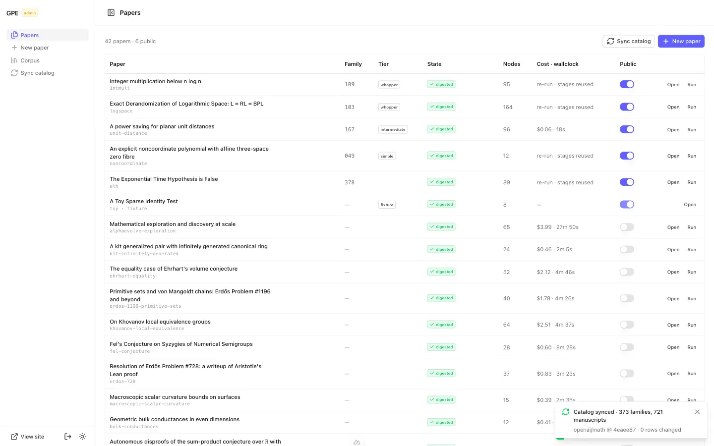
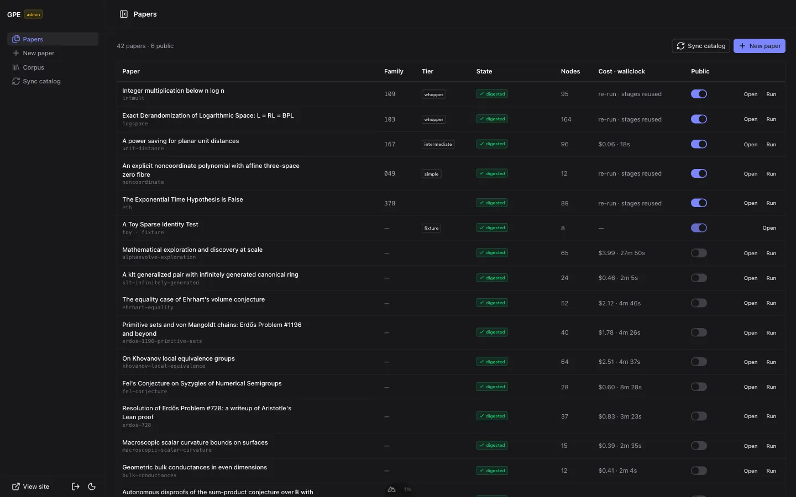
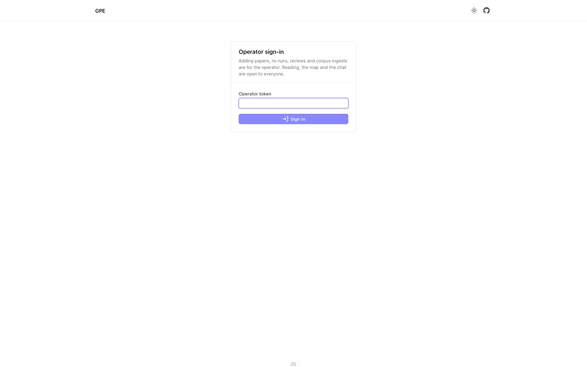
/admin lands on the operator sign-in. The public header (no sign-out) and the unchanged login card.Deviations worth flagging
- The dev DB had 27 public papers, not nine; 22 were turned off so exactly the five stay public (the list and the reverse command are in the plan). The dev toy still counts as public in dev.
useOperator()gained an awaitablereadyso the "undigested → run page or 404" decision happens during SSR;[paper]/index.vuegot the same rule.- A
UTablecolumn withheader: ''causes a hydration mismatch; the actions column has no header.
Sprint 3: public shell, landing, catalog, family pages complete
Landed: hero assets (1536w + 960w WebP); Cormorant Garamond display serif; overlay header that is transparent over the painting and turns into a blurred bar on scroll; landing (hero, featured digests, "how a paper reads here", discipline grid); /papers catalog with search, discipline, Digested, Has Lean and sort in the query string; family pages with manuscripts, PDF and source links, digest rail with Ask box, and a "not yet mapped" rail with Request a map; footer, SEO meta, robots.txt, sitemap.xml.
Verification
- Landing at 1440×900: transparent header with white text over the painting; after 100 px scroll a translucent blurred bar (
blur(8px),bg-default/75); back to top restores it. Same in dark. At 390 px,scrollWidthis 390 on/,/papers,/papers/378,/papers/185. - Featured cards show real numbers (eth 89 nodes, 5 novel, 67 pp); discipline cards sum to 373.
/papers: "kakeya" → 074 (+079); Digested → 378/103/109/167/049; Has Lean → 138, plus Combinatorics → 18; sort by number starts at 001; Load more 50 → 100;?focus=1focuses search. Every browser/api/v1/*call carriedx-gpe-site: 1, so page fetches log nothing./papers/49→ 301/papers/049;/papers/185shows the not-yet rail and the mailto;/papers/999404; Ask on/papers/378→/eth/thm-main?ask=…./sitemap.xml200 with 380 URLs;/robots.txt200; og:image is absolute${appUrl}/landing/hero.webp. Tests: 268 green.
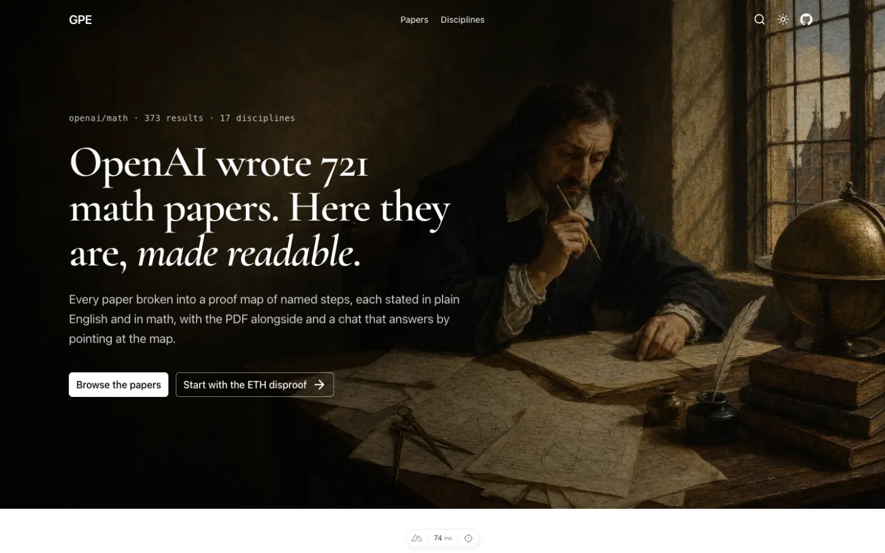
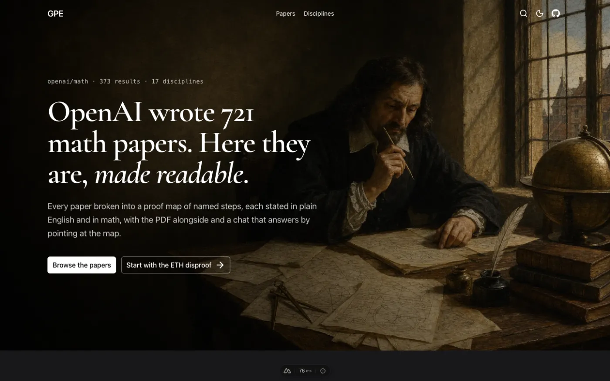
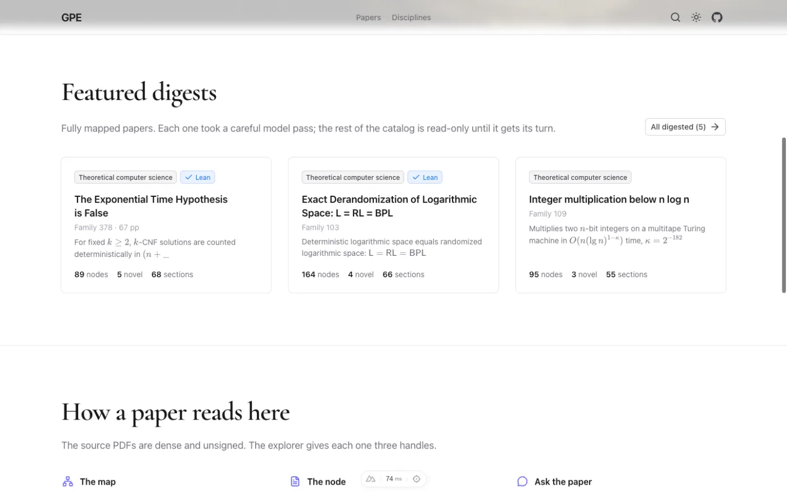
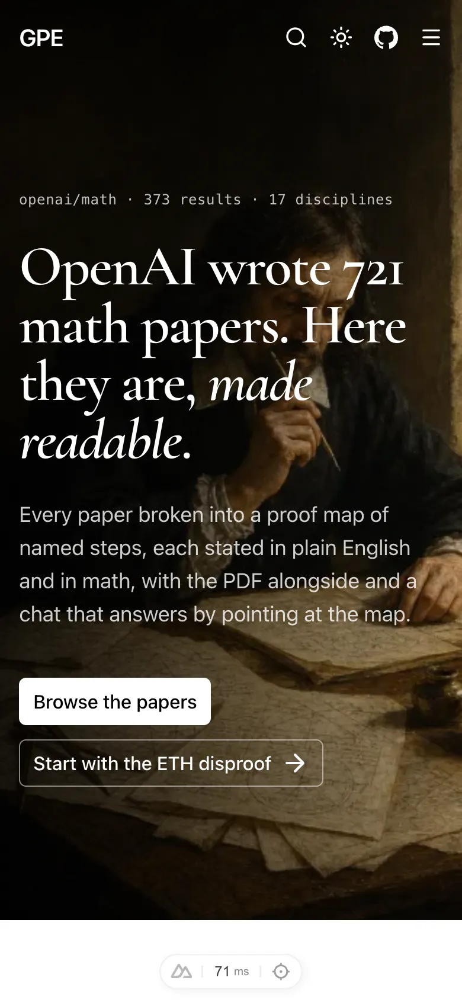
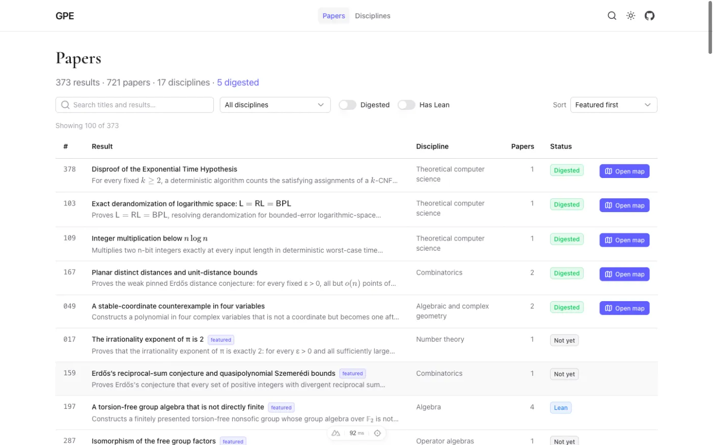
/papers (frame 02). Live stats "373 results · 721 papers · 17 disciplines · 5 digested"; featured-first sort puts the five digested (with Open map) on top, then ranked not-yet families with "featured" badges (017, 159, 197, 287). "Showing 100 of 373" is after one Load more.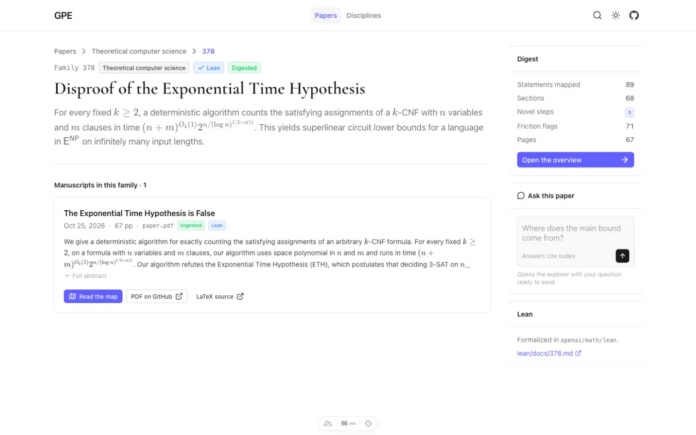
lean/docs/378.md.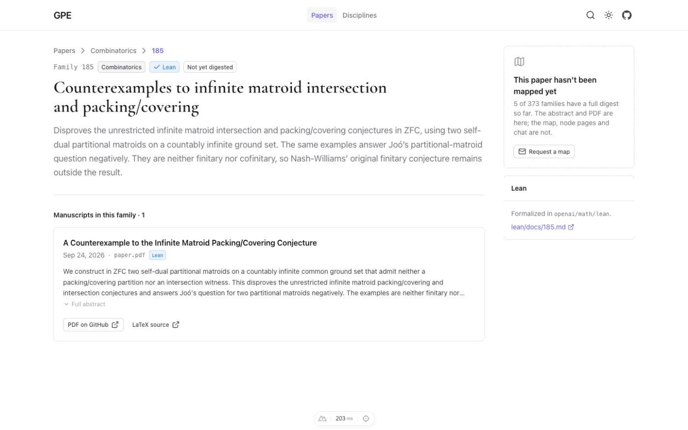
Deviations worth flagging
- The family rail is a plain sticky
<aside>(UPageAsidehides belowlg) so it shows on phones. - The Ask box fetches
/api/papers/<slug>on submit to find the root node, then navigates. - New
app/utils/catalogText.tsstrips markdown links from index prose and moves the Lean link into the Lean card. - Headline copy and the request address use the defaults pending Open Questions 1–2.
- Playwright ran in fresh contexts at
http://[::1]:3120because the shared profile has 80% zoom saved forlocalhost:3120.
Sprint 4: paper overview, summary, explorer navbar complete
Landed: a summary step in each model profile and prompts/summary.md; finalize writes digest.summary (skips with a warning on failure, never fails the run); backfill endpoint POST /api/papers/:slug/summary with "Write / Rewrite summary" on the run page; ProofShape.vue static thumbnail; PaperNavbar.vue with Papers › family › paper crumbs and Overview · Tree · Graph · Paper tabs; the overview page at /<slug>; ?ask= opens the chat with the question prefilled, never sent.
Verification
/ethoverview: three-sentence summary, main theorem, 5 novel steps, shape thumbnail, stats, three doors into the right views./logspace,/intmult,/unit-distance,/noncoordinaterender cleanly (164 / 95 / 96 / 12 nodes).- The toy fixture (no
summary) shows the fallback with no errors. - Explorer crumbs Papers › 378 … › ETH › Main theorem navigate; tabs switch and Overview returns to
/eth; legacy/eth/thm-main?view=graphworks; Ask from/papers/378opens the chat prefilled and unsent. - Tests: 274 green.
The five backfilled headlines (summaries.json; each proves was read against the main theorem, none overclaims):
| Paper | Headline | Model | Cost |
|---|---|---|---|
| eth | For fixed $k$, counts $k$-CNF solutions deterministically in $2^{O_k(n\log\log n/\sqrt{\log n})}$ time, refuting ETH | Opus 5.5 | $0.043 |
| logspace | Deterministic logarithmic space equals randomized logarithmic space: $\mathsf{L}=\mathsf{RL}=\mathsf{BPL}$ | Opus 5.5 | $0.026 |
| intmult | Multiplies $n$-bit integers in deterministic time $O(n(\lg n)^{1-\kappa})$, $\kappa=2^{-182}$, on a multitape Turing machine | Opus 5.5 | $0.029 |
| unit-distance | Any $n$ points in the plane determine $O(n^{\beta})$ unit distances for an absolute exponent $\beta<4/3$ | Opus 5.5 | $0.017 |
| noncoordinate | An explicit polynomial in four complex variables has affine three-space zero fibre but is not a coordinate | GPT-6 Sol | $0.009 |
Final pass ≈ $0.12; summary spend for the sprint ≈ $0.35 across three passes. Headlines shown as raw LaTeX here; the site renders them.
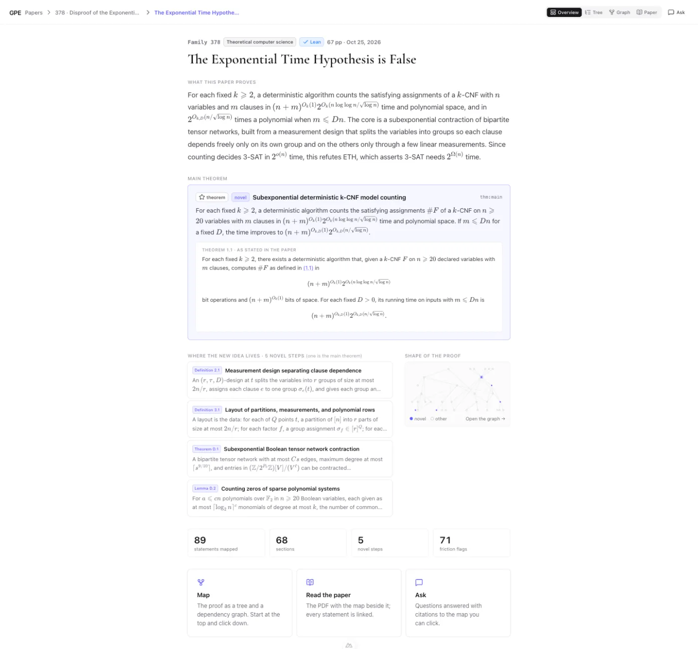
/eth (frame 04). Navbar crumbs Papers › 378 · Disproof of the Exponential… › The Exponential Time Hypothe… with Overview active; badges Family 378, TCS, Lean, "67 pp · Oct 25, 2026"; "What this paper proves" is the three-sentence summary; main theorem card with plain and as-stated versions; "5 novel steps (one is the main theorem)" with four cards; Shape of the proof thumbnail; stats 89 / 68 / 5 / 71; doors Map, Read the paper, Ask.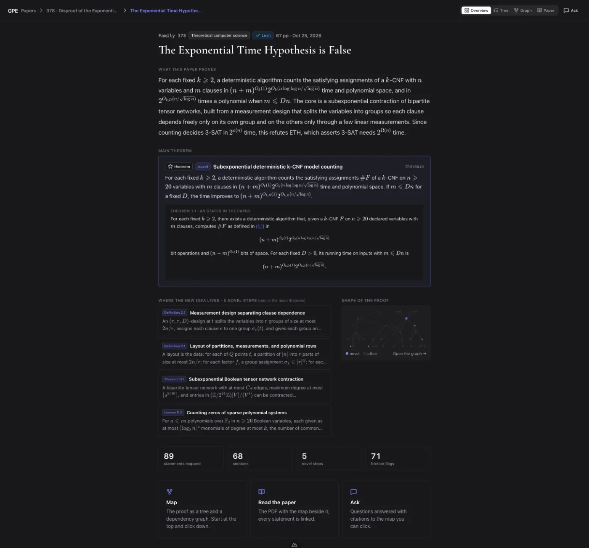
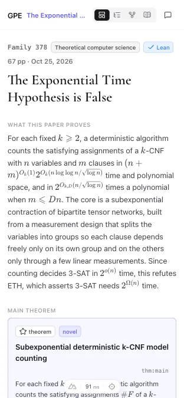
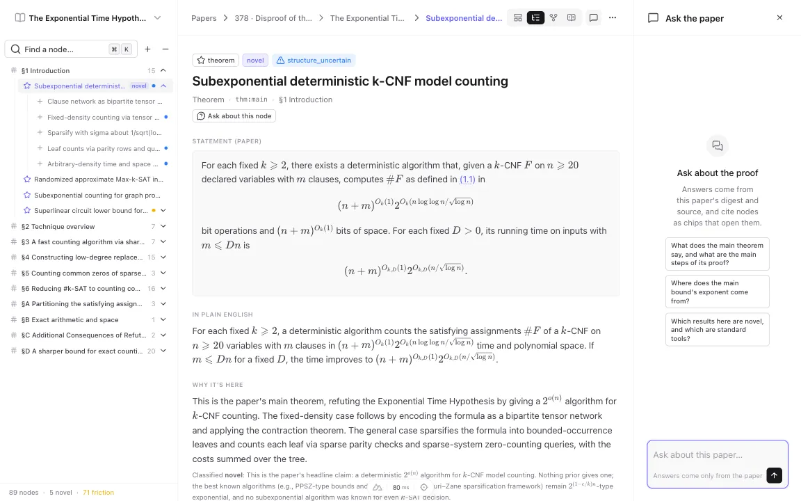
/eth/thm-main (frame 05). The only change is the navbar: Papers › 378 · Disproof of th… › The Exponential Ti… › Subexponential de… crumbs and the icon tabs (Tree active). Tree, node page and chat panel are unchanged.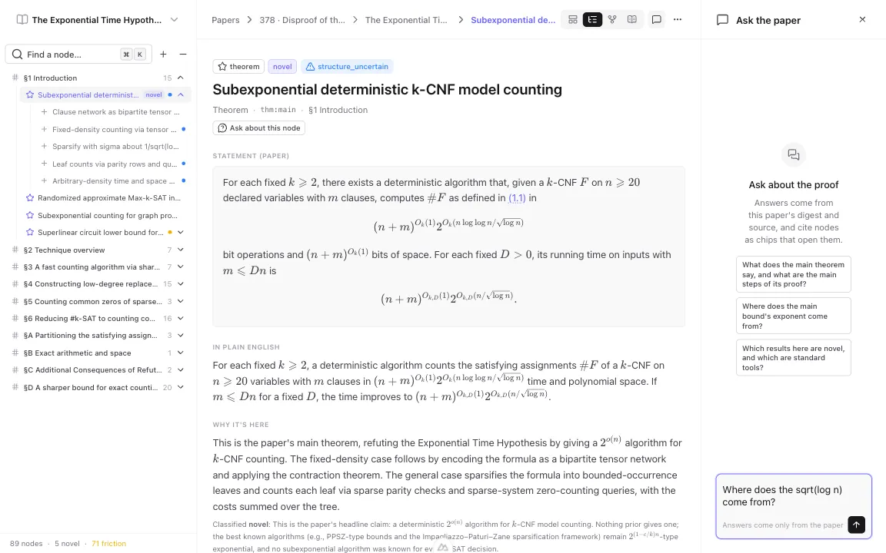
/papers/378, the explorer opens with the chat panel showing "Where does the sqrt(log n) come from?" in the input, not sent (no messages in the thread).Deviations worth flagging
- The summary prompt was tightened once: logspace's first headline ran 147 chars, eth's
proves722, noncoordinate used paper macros (\CC,\grad) that don't render outside the digest, and sentence 2 leaned on proof-internal symbols. The dev server didn't hot-reload the raw-imported.md; touchingsummary.tsdid. - Finalize adds the summary call's cost to
metrics.cost_usd,per_stage.finalizeandcalls. The prompt's catalog text comes from a directmanuscripts ⋈ familieslookup so finalize works for private papers. - Novel-step cards exclude the main theorem (it has its own card); the heading says "(one is the main theorem)" so it matches the stats row. The five digests have no graph-label headlines yet, so cards show
statement_plain. - Tab labels show from
mdon the overview and from2xlin the explorer (the explorer panel shares the row with tree and chat), which is why the explorer shot shows icon-only tabs. - The Playwright browser ran at devicePixelRatio 0.8, so 1440/390 CSS-px checks were taken at 1152/312 viewport px.
Chat
Public chat stays on Sonnet 5.5 with thinking on at reasoning: 'low' (chat.post.ts), never Haiku. One turn on /eth streamed with node chips rendered: 56.8k input / 0 cached / 917 output tokens, $0.151 gateway cost. That was a cold first turn; later turns read the digest from cache.
Budget. Kyle (Nov 1): a dedicated AI_GATEWAY_API_KEY with a ~$50 budget for public chat. With CHAT_DAILY_USD=5 the $50 lasts at least 10 days at saturation. Open: prod runs share this key, so flagship runs either use a separate key or run locally and import.
Sprint 5: data import, firewall, promote and smoke partial
5.1 and 5.2 are written and verified locally. Nothing touched Supabase: prod isn't migrated, synced or imported, no firewall rule exists, nothing is deployed, and there are no s5_prod_* screenshots. 5.3–5.8 are outbound and wait on Kyle. See Remaining work.
Sprint 5 (local): export and import
npm run papers:export -- eth logspace intmult unit-distance noncoordinate from the dev PGlite (server stopped), then SCRIPT_PGLITE_DIR=<scratch dir> npm run papers:import -- .data/export/*.json into a fresh, migrated PGlite directory in the session scratchpad. SCRIPT_PGLITE_DIR is new and read only by scripts/db.ts, so the import can be rehearsed without a second Postgres.
| Paper | runs | stage_outputs | sources | source_assets | blobs | JSON MB | Blob MB | Import counts |
|---|---|---|---|---|---|---|---|---|
| eth | 1 | 10 | 4 | 0 | 2 | 1.18 | 1.67 | match |
| logspace | 1 | 8 | 18 | 0 | 0 | 2.12 | 0.00 | match |
| intmult | 1 | 8 | 16 | 0 | 0 | 1.32 | 0.00 | match |
| unit-distance | 1 | 10 | 12 | 0 | 4 | 1.17 | 1.17 | match |
| noncoordinate | 1 | 8 | 1 | 0 | 0 | 0.11 | 0.00 | match |
Each paper: 1 papers row. Total ≈ 8.7 MB (5.9 MB JSON + 2.8 MB blobs).
- Round-trip. Every exported row compared field by field against the dev DB after import (papers, runs with
agent_tokennulled, stage_outputs, sources, source_assets, blob bytes): identical. Timestamps come back asDate,budget_usd/cost_usdas numbers, jsonb andtext[]unchanged. - Re-run. A second import of the same five prints "skipped: slug already exists in the target" for each and writes nothing.
- Tamper. One blob in a scratch copy of the export got an extra byte. Importing eth, unit-distance, noncoordinate: eth committed, unit-distance stopped with "blobs/04764fa7… is corrupt … Nothing from this file was written", exit 1, and noncoordinate was never reached. The scratch DB held 1 paper and 2 blobs afterwards.
- Linking. The exported rows already carry
manuscript_dir, so the import's link step finds nothing. With one manuscript row added to the scratch DB and eth's link cleared,linkPapersset it again. - Parent runs. All five digest runs are retries (
parent_run_idset), but the retry copies earlier stage outputs forward, so chunk and outline sit on the digest run itself and no parent was exported. The fallback is in the script but this data never reaches it. - No PDF for three. logspace, intmult and noncoordinate have no
renderoutput and export no blobs, so their?view=paperhas no compiled PDF in prod either, same as dev. eth and unit-distance carry their PDF, SyncTeX and figure PNGs.
End-to-end run-through (local)
The golden path a reader takes, in order. Full captions are in the sprint sections above.
1. Landing
2. Catalog
3. Family 378
4. Overview
5. Explorer
6. Ask prefill
7. Admin
Remaining work
Sprint 0 infra (needs Supabase pooler URIs + Vercel auth)
- 0.6 Supabase
qnsjllrorhxmtfcoqlks:DATABASE_URL='<session pooler :5432>' npm run db:migrate;.cursor/mcp.jsonwith the Supabase MCP entry, token from env. - 0.7 Vercel env on Production and Preview:
DATABASE_URL(transaction pooler :6543),OPERATOR_TOKEN,SESSION_SECRET,AI_GATEWAY_API_KEY(dedicated, ~$50 budget),AGENT_LOG_SALT,CHAT_DAILY_USD=5,NUXT_PUBLIC_APP_URL; Inngest Vercel integration; confirm Fluid compute. - 0.8 Preview deploy;
/api/health→ postgres, gateway true; no missing-env errors;/renders. - Local guard check: a remote
DATABASE_URLmakesnpm run devrefuse;ALLOW_REMOTE_DEV_DB=1lets it through with no sweep.
Sprint 5
- 5.1
scripts/export-papers.ts+papers:exportfor the five (rows + blobs, followsparent_run_idfor chunk/outline). - 5.2
scripts/import-papers.ts+papers:import(one transaction per paper, sha-verified blobs, linksmanuscript_dir). Verified locally against a scratch PGlite; the prod run is 5.4. - 5.3 Vercel Web Analytics if it stays one step, else skip and note.
- 5.4 Prod: migrate to 0005 →
catalog:sync→papers:import→ exactly five public; Supabase advisors clean on security. - 5.5 Firewall rate-limit rule on
/api/papers/*/chatand/api/mcp, confirmed with Kyle, before promoting. - 5.6 Preview deploy + smoke, then (Kyle confirms) promote and smoke prod; update
~/claude-ops/monument/projects/gpe/STATE.md. - 5.7 Prod smoke list (health with 6 migrations, public pages, explorer and PDF range request, one chat turn, signed-out/in checks, agent API, sitemap/robots/og:image, README commands);
s5_prod_*.webpadded here. - 5.8 README "Deploy (Vercel)" section.
- Verification: import counts match export; advisors show no RLS-disabled tables; firewall rule active;
vercel env lscomplete; lint/typecheck/tests green on the deployed commit.
Open questions
- Hero headline copy. "OpenAI wrote 721 math papers" vs the repo's own framing ("produced by an unnamed internal OpenAI model"). Keep the storyboard line? (Shipped locally with the storyboard line.)
- Request-a-map address.
kyle@monumentlabs.ioor a GPE-specific inbox? (Shipped locally withkyle@monumentlabs.io.) - From the env table: prod runs share the chat gateway key, so flagship runs need a separate key or run locally and import.